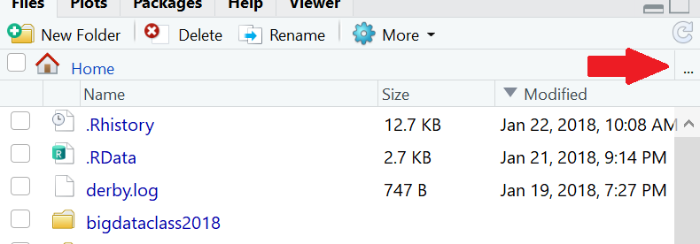

1 Access a database
1.1 Connect to a database
The simpliest way to connect to a database. More complex examples will be examined later in the class.
Click on the
ConnectionstabClick on the
New Connectionbutton

- Select
Postgres Dev

- Click OK

1.2 Explore the database using the RStudio IDE
Becoming familiar with the new interface for databases inside the RStudio IDE
Expand the
datawarehouseschemaExpand the
airporttableClick on the table icon to the right of the
airporttable(Optional) Expand and explore the other tables
Click on the disconnect icon to close the connection

1.3 List drivers and DSNs
Learn how to use the odbc package to get DB info from your machine
- To get a list of drivers available in the server
library(odbc)
odbcListDrivers()[1:2]## name attribute
## 1 AmazonRedshift Driver
## 2 Hive Driver
## 3 Impala Driver
## 4 Oracle Driver
## 5 PostgreSQL Driver
## 6 Salesforce Driver
## 7 SQLServer Driver
## 8 Teradata Driver- Click on the ellipsis button located in the Files tab

- Type:
/etc

Locate and open the
odbcinst.inifileTo see a list of DSNs available in the server
odbcListDataSources()## name description
## 1 Postgres Dev PostgreSQL
## 2 Postgres Prod PostgreSQL- Using the ellipsis button again, navigate to
/etc/odbc.ini
1.4 Connect to a database using code
Use the odbc package along with DBI to open a connection to a database
- Run the following code to connect
library(DBI)
con <- dbConnect(odbc::odbc(), "Postgres Dev")- Use
dbListTables()to retrieve a list of tables
dbListTables(con)## [1] "airport" "carrier" "flight" "flightscore" "vflight"- Use
dbGetQuery()to run a quick query
odbc::dbGetQuery(con, "SELECT * FROM datawarehouse.airport LIMIT 10")## airport airportname city state country
## 1 ABE Lehigh Valley International Allentown PA USA
## 2 ABI Abilene Regional Abilene TX USA
## 3 ABQ Albuquerque International Albuquerque NM USA
## 4 ABY Southwest Georgia Regional Albany GA USA
## 5 ACK Nantucket Memorial Nantucket MA USA
## 6 ACT Waco Regional Waco TX USA
## 7 ACV Arcata Arcata/Eureka CA USA
## 8 ACY Atlantic City International Atlantic City NJ USA
## 9 ADK Adak Adak AK USA
## 10 ADQ Kodiak Kodiak AK USA
## lat long
## 1 40.65236 -75.44040
## 2 32.41132 -99.68190
## 3 35.04022 -106.60919
## 4 31.53552 -84.19447
## 5 41.25305 -70.06018
## 6 31.61129 -97.23052
## 7 40.97812 -124.10862
## 8 39.45758 -74.57717
## 9 51.87796 -176.64603
## 10 57.74997 -152.49386- Use the SQL chunk
SELECT * FROM datawarehouse.airport LIMIT 10| airport | airportname | city | state | country | lat | long |
|---|---|---|---|---|---|---|
| ABE | Lehigh Valley International | Allentown | PA | USA | 40.65236 | -75.44040 |
| ABI | Abilene Regional | Abilene | TX | USA | 32.41132 | -99.68190 |
| ABQ | Albuquerque International | Albuquerque | NM | USA | 35.04022 | -106.60919 |
| ABY | Southwest Georgia Regional | Albany | GA | USA | 31.53552 | -84.19447 |
| ACK | Nantucket Memorial | Nantucket | MA | USA | 41.25305 | -70.06018 |
| ACT | Waco Regional | Waco | TX | USA | 31.61129 | -97.23052 |
| ACV | Arcata | Arcata/Eureka | CA | USA | 40.97812 | -124.10862 |
| ACY | Atlantic City International | Atlantic City | NJ | USA | 39.45758 | -74.57717 |
| ADK | Adak | Adak | AK | USA | 51.87796 | -176.64603 |
| ADQ | Kodiak | Kodiak | AK | USA | 57.74997 | -152.49386 |
- Use the
output.varoption to load results to a variable
SELECT * FROM datawarehouse.airport LIMIT 10- Test the variable
sql_top10## airport airportname city state country
## 1 ABE Lehigh Valley International Allentown PA USA
## 2 ABI Abilene Regional Abilene TX USA
## 3 ABQ Albuquerque International Albuquerque NM USA
## 4 ABY Southwest Georgia Regional Albany GA USA
## 5 ACK Nantucket Memorial Nantucket MA USA
## 6 ACT Waco Regional Waco TX USA
## 7 ACV Arcata Arcata/Eureka CA USA
## 8 ACY Atlantic City International Atlantic City NJ USA
## 9 ADK Adak Adak AK USA
## 10 ADQ Kodiak Kodiak AK USA
## lat long
## 1 40.65236 -75.44040
## 2 32.41132 -99.68190
## 3 35.04022 -106.60919
## 4 31.53552 -84.19447
## 5 41.25305 -70.06018
## 6 31.61129 -97.23052
## 7 40.97812 -124.10862
## 8 39.45758 -74.57717
## 9 51.87796 -176.64603
## 10 57.74997 -152.49386- Disconnect from the database using
dbDisconnect()
dbDisconnect(con)1.5 Connect to a database without a DSN
A more complex way of connecting to a database, using best practices: http://db.rstudio.com/best-practices/managing-credentials/#prompt-for-credentials
- Use the following code to start a new connection that does not use the pre-defined DSN
con <- dbConnect(
odbc::odbc(),
Driver = "PostgreSQL",
Server = "localhost",
UID = rstudioapi::askForPassword("Database user"),
PWD = rstudioapi::askForPassword("Database password"),
Port = 5432,
Database = "postgres"
)When prompted, type in rstudio_dev for the user, and dev_user as the password
Disconnect from the database using
dbDisconnect()
dbDisconnect(con)## Warning: Connection already closed.1.6 Secure credentials in a file
Credentials can be saved in a YAML file and then read using the config package: http://db.rstudio.com/best-practices/managing-credentials/#stored-in-a-file-with-config
Open and explore the
config.ymlfile available in your working directoryLoad the
datawarehouse-devvaelus to a variable
dw <- config::get("datawarehouse-dev")- Check that the variable loaded propery, by checking the
drivervalue
dw$driver## [1] "PostgreSQL"- Use info in the config.yml file to connect to the database
con <- dbConnect(odbc::odbc(),
Driver = dw$driver,
Server = dw$server,
UID = dw$uid,
PWD = dw$pwd,
Port = dw$port,
Database = dw$database
)- Disconnect from the database using
dbDisconnect()
dbDisconnect(con)1.7 Environment variables
Use .Renviron file to store credentials
Open and explore the
.Renvironfile available in your working directoryConfirm that the environment variables are loaded by using
Sys.getenv()
Sys.getenv("uid")## [1] "rstudio_dev"- Pass the credentials using the environment variables
con <- dbConnect(
odbc::odbc(),
Driver = "PostgreSQL",
Server = "localhost",
UID = Sys.getenv("uid"),
PWD = Sys.getenv("pwd"),
Port = 5432,
Database = "postgres"
)- Disconnect from the database using
dbDisconnect()
dbDisconnect(con)1.8 Use options()
Set options() in a separate R script
Open and explore the
options.Rscript available in your working directorySource the
options.Rscript
source("options.R")- Confirm that the environment variables are loaded by using
Sys.getenv()
getOption("database_userid")## [1] "rstudio_dev"- Pass the credentials using the environment variables
con <- dbConnect(
odbc::odbc(),
Driver = "PostgreSQL",
Server = "localhost",
UID = getOption("database_userid"),
PWD = getOption("database_password"),
Port = 5432,
Database = "postgres"
)- Disconnect from the database using
dbDisconnect()
dbDisconnect(con)## Warning: Connection already closed.